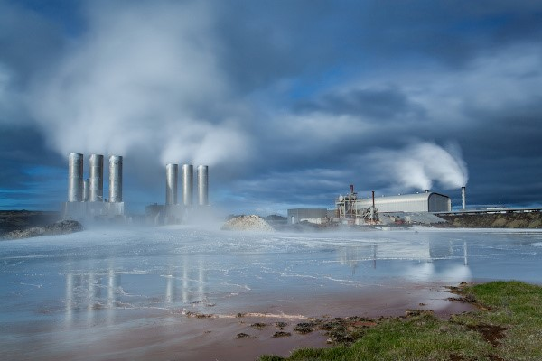
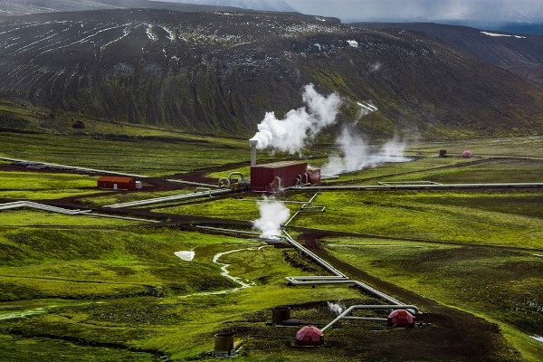
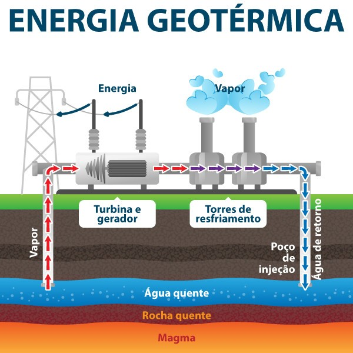

Energia Geotérmica

Central de energia Geotermica, Islândia .
Energia geotérmica (ou energia geotermal) é a energia derivada do calor interno do planeta Terra.
É uma fonte de energia limpa e renovável, que está disponível de maneira constante na natureza. No entanto,
sua exploração é mais fácil nas proximidades do encontro de placas tectônicas. A energia geotérmica pode ser convertida em eletricidade,
o que acontece no interior das usinas geotérmicas, ou ser empregada diretamente para o aquecimento e resfriamento de imóveis. Embora apresente muitas vantagens,
é pouco utilizada no Brasil e no mundo.
Vantagens e Desvantagens
É uma energia limpa, isto é, que não resulta na emissão de gases poluentes para a atmosfera e,
portanto, não contribui para o agravamento do aquecimento global (aumento anormal da temperatura média do planeta),
a energia geotérmica é oriunda de uma fonte renovável de energia. Isso significa que ela não se esgotará em um futuro próximo e pode ser encontrada em quantidades abundantes na natureza,
as usinas geotérmicas têm a capacidade de funcionar de maneira ininterrupta, tendo em vista que a fonte utilizada não depende de fatores externos (como dos ventos ou da luz solar, por exemplo) ou de fenômenos climáticos específicos (como as chuvas),
não demanda grandes áreas para a construção das usinas, e o impacto sobre o meio natural e para a população são menores se comparados a outras formas de geração de energia,
é baixíssimo o custo de produção e de manutenção das usinas. Os gastos se concentram na infraestrutura para a instalação.
A instalação das usinas geotérmicas pode provocar fraturas no substrato (solo e rochas) e, ainda, levar ao afundamento da área de funcionamento, há aquecimento da superfície e dos terrenos próximos, o que demanda que as usinas sejam instaladas em áreas mais afastadas,
ocorrem tremores de terra durante a perfuração dos poços das usinas geotérmicas, os custos de instalação são muito altos, especialmente em regiões onde as fontes geotérmicas se apresentam em maior profundidade, elevada poluição sonora para a perfuração dos poços e instalação da infraestrutura.
Os ruídos podem ser emitidos também na geração de energia, O processo de geração de energia pode resultar na poluição dos solos e dos corpos hídricos quando a água resultante é retornada sem tratamento. Isso se dá em função das inúmeras substâncias tóxicas que o material obtido do interior da Terra pode apresentar, como o dióxido de enxofre.
A energia Geotérmica no Brasil e no mundo
As fontes geotérmicas brasileiras, maioria das quais estão situadas em áreas de bacias sedimentares, são pouco exploradas no país.
No mundo, os maiores potenciais geotérmicos ficam nas áreas de encontro entre placas tectônicas, o que não é observado na geologia do Brasil.
No Brasil, o uso das fontes geotermais está mais associado à recreação e ao lazer do que à geração de eletricidade e às atividades econômicas, como na indústria e na atividade agrícola.
O maior potencial geotérmico para a exploração econômica fica nos estados de Goiás, Paraná, São Paulo, Santa Catarina e Tocantins. Atualmente, as fontes geotérmicas são utilizadas em áreas de recreio nas cidades de Caldas Novas (GO) e Poços de Caldas (MG)."
A energia geotérmica, embora seja uma importante fonte sustentável de geração, é pouco utilizada no mundo. Ela está inclusa na fatia de 2,5% da matriz energética global, que agrega fontes como a solar e a eólica.
Apesar do baixo uso em escala mundial, a energia geotérmica é primordial na geração de eletricidade de alguns países, além de constituir boa parte de sua matriz energética. São esses países: El Salvador; Filipinas; Islândia; Nova Zelândia; Quênia.
Destaque para Usina Krafla na Islândia

Usina de Krafla, Islândia.
No caso da Islândia, mais de 90% da energia gerada e consumida no país é proveniente de fontes geotérmicas,
de acordo com a Agência Internacional para as Energias Renováveis (Irena, na sigla em inglês).
Como Funciona a Usina Geotérmica

Exemplo do funcionamento de uma Usina Geotérmica.
O vapor d’água é conduzido por meio de um sistema de tubos, denominado vaporduto, para um segundo compartimento, onde as turbinas são acionadas. A partir de então, a energia mecânica gerada pelo movimento das turbinas aciona o gerador,
onde acontece a sua conversão em eletricidade. Após esse processo, a energia elétrica é conduzida ao seu consumidor final. O vapor d’água passa por um resfriamento e pela condensação, sendo reintroduzido em subsuperfície.